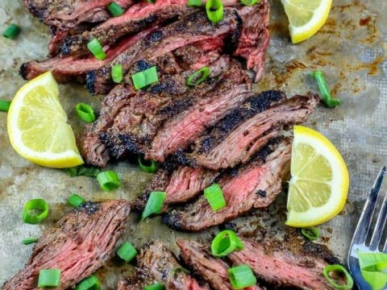

Grilled Five Spice Flank Steak

Ingredients:
- 1.5 lb Flank Steak
- 1 tsp Salt
- 1/2 cup Hoisin Sauce
- 1 tbsp Chinese 5 Spice
- Asian salad kit
- 1 tbsp Sesame Seeds
Preperation:
- Lightly score the surface of the flank steak with a sharp knife. Sprinkle it with salt on both sides.
- Mix the hoisin and Chinese five-spice in a small bowl. Pour over the flank steak on a rimmed baking sheet and coat it entirely. Marinate in the fridge for at least one hour.
- Heat grill to 350°F. Cook the flank steak on both sides to your desired doneness. Normally about 6 minutes per side for medium rare. We suggest using an instant read thermometer.
- Rest the meat for 5 minutes before thinly slicing against the grain.
- Toss the salad and all the fixings in a bowl. Serve the steak with extra hoisin sauce over the salad sprinkled with sesame seeds.